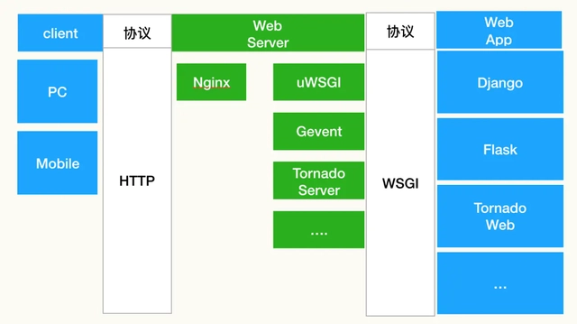

Flask
什么是Flask
- 什么是Web Framework？
Web Application Framework（Web应用程序框架）或简单的Web Framework（Web框架）表示一个库和模块的集合，使Web应用程序开发人员能够编写应用程序，而不必担心协议，线程管理等低级细节。
- 什么是Flask？
Flask是一个用Python编写的Web应用程序框架。 它由 Armin Ronacher 开发，他领导一个名为Pocco的国际Python爱好者团队。 Flask基于Werkzeug WSGI工具包和Jinja2模板引擎。两者都是Pocco项目。
- WSGI
Web Server Gateway Interface（Web服务器网关接口，WSGI）已被用作Python Web应用程序开发的标准。WSGI 是一个 Python Web 应用程序与 Web 服务器之间的接口规范，它定义了应用程序和服务器之间的标准接口，使得应用程序可以在不同的 Web 服务器上运行。WSGI 规范规定了应用程序必须实现的接口方法和服务器需要支持的方法。WSGI 协议使得不同的 Python Web 框架（例如 Flask、Django 等）能够在不同的 Web 服务器上运行，这些服务器可以是 Apache、Nginx 等。

关于WSGI很好的一篇文章：《花了两个星期，我终于把 WSGI 给搞明白了》
- Werkzeug
它是一个WSGI工具包，它实现了请求，响应对象和实用函数。 这使得能够在其上构建web框架。 Flask框架使用Werkzeug作为其基础之一。
- jinja2
jinja2是Python的一个流行的模板引擎。Web模板系统将模板与特定数据源组合以呈现动态网页。
Flask通常被称为微框架。 它旨在保持应用程序的核心简单且可扩展。Flask没有用于数据库处理的内置抽象层，也没有形成验证支持。相反，Flask支持扩展以向应用程序添加此类功能。
为什么学习Flask
我学习Flask的原因很简单，因为用过。在大学本科的毕设中，我用yolo成功的可以识别定位到车辆号牌并用OCR可以提取车牌信息后，尝试为这个系统做一个可以看的客户端，这时，flask映入眼帘，良好的使用体验让我成功把我的毕设代码塞了进去，多少是可以像个web应用一样运行起来了。
不过说实话我并不了解这个东西，所以，应该是在上次疯狂想做个人网页的时候，我把它想起来了，虽然它没有成为我自己个人网页的选择，不过它的教程还是躺在我的收藏夹里了。现在，我打开了它的教程，打算系统梳理一下这个东西，然后尝试做一个自己的网页应用。本次梳理主要借鉴：w3cschool——Flask教程
开始学习
安装
pip install Flask
没啥可介绍的，无脑装就行了。